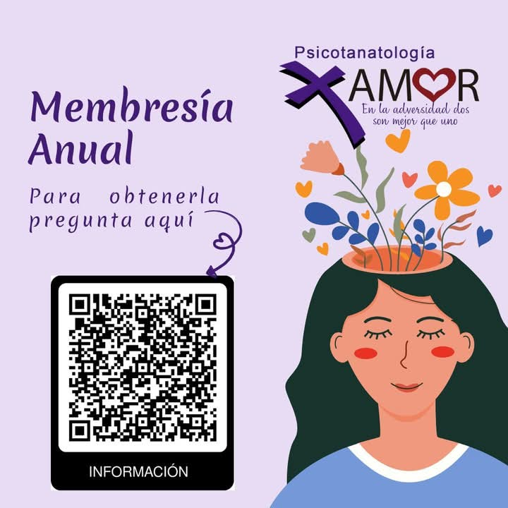

Psicotanatología
Acompañamiento emocional profesional en modalidad presencial y en línea.
"EN LA ADVERSIDAD DOS SON MEJOR QUE UNO"
Acompañamiento emocional profesional en modalidad presencial y en línea.
"EN LA ADVERSIDAD DOS SON MEJOR QUE UNO"
Profesional comprometida con el acompañamiento emocional, brindando un espacio seguro, humano y confidencial.
Ced. Lic.: 11855569
Ced. Mstría.: 15366223
Especialidad: Psicotanatología "Por Amor"

Espacio para trabajar emociones y situaciones personales.
Atención en consultorio en un entorno profesional.
Sesiones virtuales con total confidencialidad.
Dirección:
Montesinos #1375 entre Guadalupe Victoria y Revillagigedo
Col. México C.P. 91756
Horario de atención:
Lunes a Viernes: 6:00 p.m. – 8:00 p.m.
Sábado: 3:00 p.m. – 6:00 p.m.